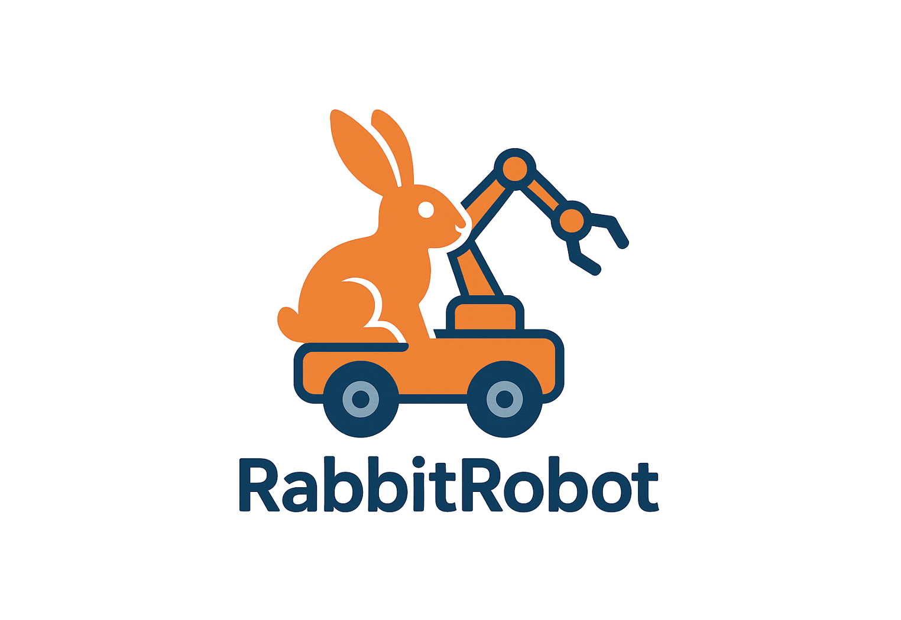
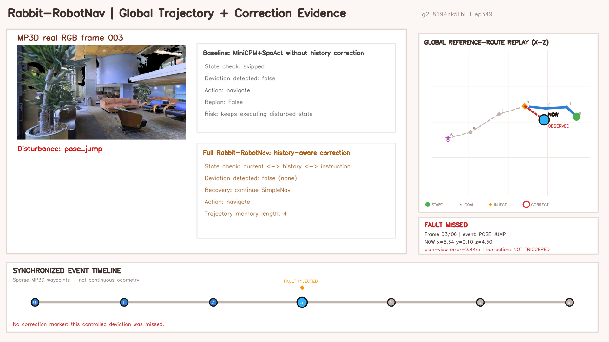
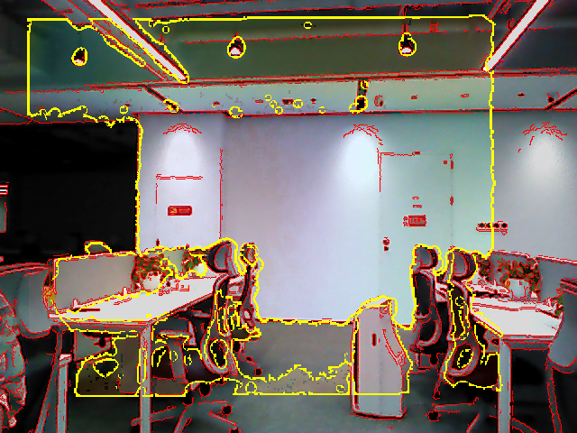
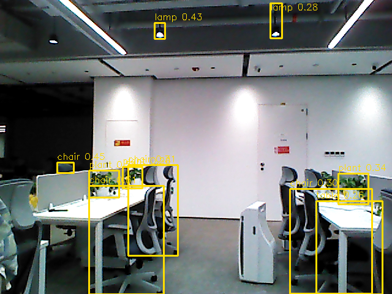

历史感知语义地图
区分原始观测与可信聚合状态，用可靠性门禁阻止错误历史污染记忆。

MASTER THESIS PROJECT · WORK IN PROGRESS
基于历史感知语义地图与动态空间推理的
长程视觉语言导航纠错框架研究
History-Aware Semantic Mapping and Dynamic Spatial Reasoning for Long-Horizon Vision-and-Language Navigation
硕士论文研究 · 2026
长程视觉语言导航中的偏航可能跨多个房间和指令阶段累积，单帧观测难以判断“走错了多久、该回到哪里”。Rabbit-RobotNav 以可信历史语义—空间记忆为诊断证据，结合指令、历史与状态转移的一致性检查定位偏差，并检索最近可靠状态作为恢复锚点。当前工作聚焦无评估标签的偏航诊断与锚点选择；闭环恢复执行、导航指标改善和运动中的真机语义地图仍待正式验证。
分开呈现仿真中的诊断案例与真实机器人上的静止感知验证；两者不能合并为端到端导航结论。
01 / MP3D CONTROLLED CASE STUDY
五个场景、五条 episode 的稀疏参考航点回放中，四类受控偏差检出三类；2.44 m 位姿跳变未被检出。另一个 110 episode 配对导航 A/B 中，SR 持平，SPL 与 nDTW 未改善。因此这里展示的是机制与失败案例，不是已获证的导航增益。
查看实验台账 ↗
02 / WHEELTEC REAL ROBOT · READ-ONLY
9 月 24 日，Astra 相机 TF 单父节点审计、当前 mapper 所用的 Color CameraInfo K＋注册深度投影契约，以及约 47 秒的静止 Trial 0 通过。Trial 0 接收/处理 413/388 帧，生成 14 个对象与实际接收的 28 个 Marker。Depth CameraInfo 的 K 仍含 NaN，其他消费者未据此放行。
静止 PASS ≠ 运动建图 PASS；Trial 1–3、跨视角 ID、Nav2 与自动纠偏尚未验证。
查看原始图像与诊断 ↗

本页是持续迭代的硕士论文项目摘要，依据两份飞书研究记录和 real-robot-integration 提交 9c0406。下一步是独立多 episode 的正式配对消融、位姿跳变漏检分析，以及真机 Trial 1–3；尚不宣称完整长程纠错闭环完成。